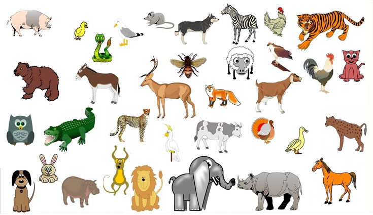

Los animales (reino Animalia o metazoos) son seres vivos eucariotas, pluricelulares y heterótrofos que se caracterizan por su capacidad de locomoción, respuesta nerviosa y respiración. Se clasifican principalmente en vertebrados (con columna vertebral) e invertebrados (sin ella), basándose en estructuras anatómicas, alimentación y reproducción

tipos de animales: